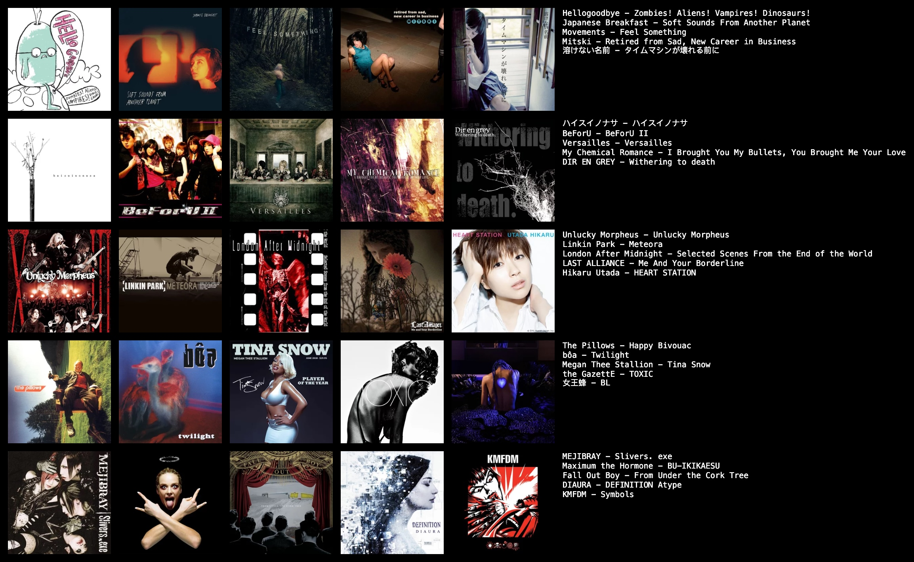

thanks for checking out my page!
i made this website so i could have a place to say everything i want to say without counting likes, story views, or comments. i would eventually like to leave social media, but i still derive too much pleasure from it for now, and i cherish the connections i have and continue to make on there. so this site is really a suppliment to it right now.
i'm just an enjoyer and creator of many things! i love things with art, writing, tech, all that stuff, and wanted to put all those passions to show somehow...
if you somehow stumbled upon this without a plug from said social media pages, hi, i’m revy a.k.a. aslan. yes, after the black lagoon character and the lion from narnia. to avoid having to explain the fact that i named myself after an anime character, i can cheekily explain it’s from my middle name, wjika’qaku, raven in mi’kmaw (raven… revy…).
i enjoy a multitude of things, though anime and video games have and will always be my biggest two. my favorite animanga series ever is rurouni kenshin. my favorite video games of all time are silent hill 3, ocarina of time, halo: reach, and dance dance revolution. i'm also a yumejoshi and ship myself/my oc with Enishi Yukishiro. i’ve recently gotten back into cosplay and i try and make everything i can from scratch. i’ve also gotten into gunpla, and i play mtg and gcg with my partner and friends. here are some things i’m really into right now:
Music
Movies